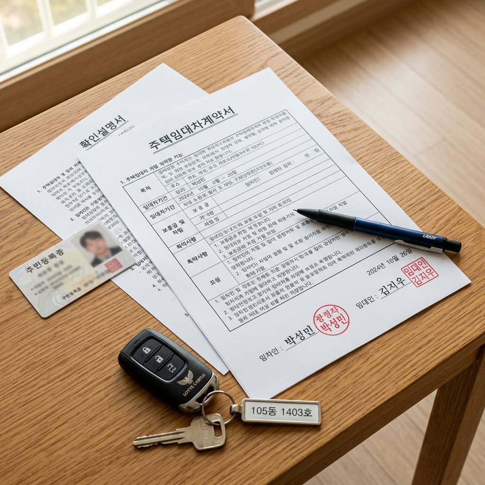
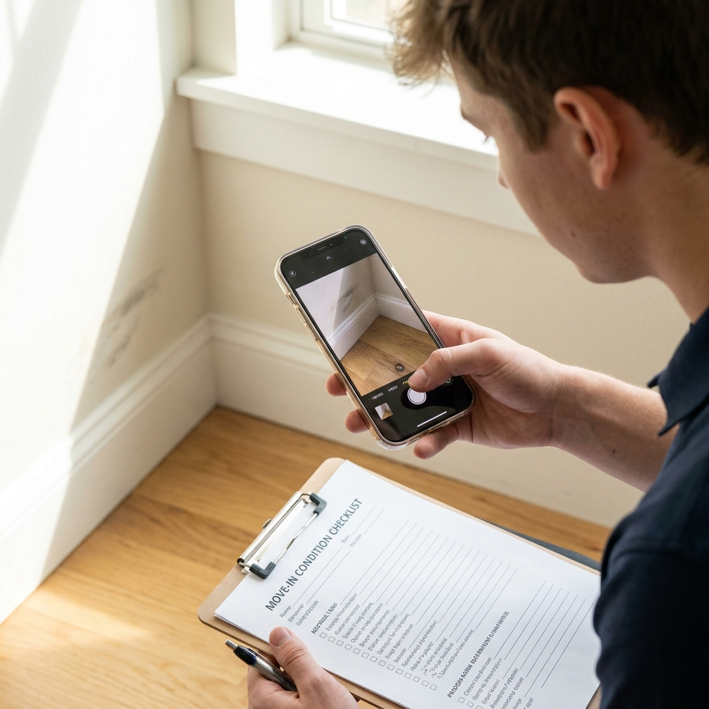

월세 계약서 특약 문구 예시와 주의사항 — 시설물 수리 책임·중도해지·반려동물 분쟁 예방 체크리스트
월세 계약을 체결할 때 표준임대차계약서의 기본 조항만 믿고 도장을 찍었다가, 입주 후 보일러가 고장 나거나 중도 퇴거할 때 수백만 원의 도배·장판 교체비 폭탄을 맞고 분쟁에 휘말리는 세입자들이 매우 많습니다.
임대차 분쟁의 90%는 계약 체결 당시 '특약(특별약정)'을 구체적으로 명시하지 않았거나, 임대인에게 일방적으로 유리한 독소 조항을 무비판적으로 수용했기 때문에 발생합니다.
에어컨·보일러 노후 수리 비용 주체부터 만기 전 이사 시 중개수수료 부담 약정, 반려동물 사육 허용 조건, 그리고 주택임대차보호법상 강행규정 위반으로 무효가 되는 조항 비교까지 계약서에 그대로 복사해 넣는 실전 특약 문구를 완벽히 정리해 드립니다.

임대차 계약서 작성과 핵심 특약 조항 점검 날인 / AI 제작 이미지
01 | 월세 임대차 계약서 특약 작성의 중요성과 기본 원칙 요약
임대차 계약서의 하단에 기재되는 '특약 사항'은 민법 및 임대차 관례보다 우선하여 임대인(집주인)과 임차인(세입자) 간의 권리와 의무를 구속하는 강력한 법적 효력을 가집니다.
구두로 "집주인이 알아서 고쳐주겠다", "언제든 방 빼도 된다"고 나눈 대화는 나중에 분쟁이 발생했을 때 아무런 증거 능력을 갖지 못합니다.
따라서 돈과 시설물에 관련된 모든 민감한 조건은 반드시 계약서 특약란에 육필 또는 활자로 명확한 문장으로 인쇄되어 양 당사자의 날인을 받아두어야 합니다.
특약을 작성할 때의 대원칙은 '책임의 주체', '금액 또는 기간의 기준', '불이행 시 처리 방법'을 6하 원칙에 따라 구체적이고 객관적인 수치로 한정하는 것입니다.
02 | 보일러·누수·에어컨 — 시설물 고장 및 노후 수리 책임 분담 특약 문구
월세 거주 중 가장 빈번하게 발생하는 다툼은 보일러, 에어컨, 수전, 방충망 등 집안 시설물이 고장 났을 때 "수리비를 누가 낼 것인가"입니다.
민법 제623조에 따라 임대인은 임차인이 거주할 수 있는 상태를 유지해야 할 적극적 수선의무를 지닙니다. 구조적 결함이나 노후화로 인한 고장은 집주인이, 전등이나 건전지 등 소모품 교체는 세입자가 부담하는 것이 원칙입니다.
하지만 분쟁을 원천 차단하기 위해서는 금액 기준을 설정하여 특약에 못 박아 두는 것이 가장 깔끔합니다.
📝 그대로 복사해 쓰는 [시설물 수리 분담] 특약 문구
"보일러, 배관 누수, 빌트인 가전(에어컨·냉장고·세탁기 등), 전기 배선 등 주요 설비의 노후 및 자연 마모로 인한 고장 수리 비용은 임대인이 전액 부담한다. 단, 임차인의 고의 또는 명백한 과실로 인한 파손이나 전등, 도어록 건전지, 샤워기 헤드 등 건당 3만 원 이하의 경미한 소모품 교체 비용은 임차인이 부담하기로 한다."
이와 같이 3만 원 혹은 5만 원 단위로 소모품 상한선을 정해두면 고장 시마다 집주인과 얼굴을 붉히며 실랑이를 벌일 필요가 없습니다.
03 | 만기 전 중도 해지 시 위약금과 신규 임차인 중개보수 부담 특약 문구
취업, 이직, 결혼 등으로 계약 기간(보통 1년 또는 2년)을 다 채우지 못하고 중도에 퇴거해야 할 때도 특약이 분쟁 해결의 기준이 됩니다.
법적으로는 임차인이 약정 기간을 지켜야 하므로 중도 해지권이 없으며, 임대인이 동의해 주지 않으면 남은 기간의 월세를 계속 납부해야 합니다.
관례상 "세입자가 다음 세입자를 구해주고 복비를 내고 나간다"고 하지만, 이 역시 특약이 없으면 집주인이 과도한 보증금 인상을 요구하며 방을 안 놓아주거나 계약 해지를 거부할 수 있습니다.
📝 그대로 복사해 쓰는 [중도 퇴거] 특약 문구
"임차인의 개인 사정으로 계약 기간 만료 전 중도 퇴거할 경우, 임차인은 퇴거 희망일 최소 1개월 전에 임대인에게 통보하고 신규 임차인을 주선하기 위해 적극 협조한다. 이 경우 발생하는 신규 임대차 계약의 부동산 중개보수는 기존 임차인이 부담하며, 신규 임차인의 입주 및 보증금 완납과 동시에 기존 임대차 계약은 종료되고 보증금을 전액 반환한다."
이 문구를 넣어두면 집주인이 터무니없는 위약금을 요구하거나 새 세입자가 들어왔는데도 보증금 반환을 미루는 횡포를 방지할 수 있습니다.
04 | 반려동물 사육 허용 조건과 퇴거 시 도배·장판 훼손 원상복구 특약 문구
반려동물(반려견, 반려묘)을 키우는 1인 가구가 급증하면서 퇴거 시 도배·장판 훼손을 둘러싼 원상복구 청구 소송이 폭증하고 있습니다.
집주인은 "벽지 전체를 새로 해놓아라"며 수백만 원을 요구하고, 세입자는 "일부만 긁혔는데 왜 전체를 가느냐"며 맞서는 경우가 다반사입니다.
📝 그대로 복사해 쓰는 [반려동물 사육] 특약 문구
"임대인은 임차인의 반려동물(소형견 1마리 등 구체화) 사육을 사전 승인한다. 임차인은 반려동물로 인해 벽지 찢김, 장판 파손, 악취 발생 등 통상적인 사용 마모를 초과하는 명백한 훼손이 발생한 경우 퇴거 시 해당 손상 부위에 대한 원상복구 비용 또는 전문 청소 소독비를 부담한다. 단, 햇빛에 의한 자연 탈색이나 단순 노후 변색 등 일상적인 생활 마모는 원상복구 대상에서 제외한다."
'통상적인 마모는 제외'한다는 문구를 반드시 포함해야 2~3년 거주 후 자연스럽게 낡은 벽지 비용까지 세입자에게 뒤집어씌우는 독소 청구를 차단할 수 있습니다.

입주 당일 기존 시설물 하자 상태 사진 촬영 및 기록 / AI 제작 이미지
05 | 실내 흡연 금지 및 특수 청소비(악취 제거) 청구 특약 문구
최근 원룸이나 오피스텔 계약서에 집주인들이 가장 빈번하게 삽입하는 조항이 바로 '실내 흡연 금지' 조항입니다.
원룸 내에서 연초나 전자담배를 피울 경우 니코틴과 타르가 도배지 깊숙이 배어 일반 청소로는 냄새가 빠지지 않아 다음 임차인 유치가 불가능해집니다.
임대인 입장에서는 "실내 흡연 적발 시 즉시 퇴거 및 도배비 100만 원 청구"와 같은 강력한 문구를 요구할 수 있으며, 비흡연 임차인이라면 이 조항을 흔쾌히 수용하되 "실제 훼손 입증 시"로 한정하는 방어 문구를 덧붙이는 것이 좋습니다.
📝 [실내 흡연 및 악취 방지] 특약 문구
"임차인은 쾌적한 주거 환경 유지를 위해 주택 실내(화장실, 베란다 포함)에서 흡연을 하지 않기로 한다. 퇴거 시 실내 흡연으로 인한 벽지 변색이나 악취가 명백히 확인될 경우, 임차인은 도배 시공비 또는 악취 제거를 위한 특수 청소 비용 실비를 배상한다."
06 | 주택임대차보호법 강행규정 위반으로 무효가 되는 임대인 일방 특약 비교표
계약서에 아무리 집주인이 원하는 대로 특약을 적어 넣고 세입자가 도장을 찍었더라도, 주택임대차보호법의 강행규정을 위반하여 임차인에게 일방적으로 불리한 조항은 법적으로 전부 '무효'가 됩니다.
이를 '편면적 강행규정'이라고 부릅니다. 계약서에 적혀 있다고 해서 무조건 효력이 있는 것이 아니므로 법적 무효 조항을 정확히 식별할 수 있어야 합니다.
| 계약서에 자주 들어가는 집주인 특약 문구 |
법적 효력 여부 |
무효가 되는 법적 근거 및 세입자 대처법 |
| "임차인은 2년 계약 만기 시 계약갱신청구권을 일절 행사하지 않는다" |
전면 무효 |
주임법 제6조의3 강행규정 위반. 사전에 포기 각서를 써도 갱신 청구 가능 |
| "월세를 단 1회라도 연체하면 임대인은 즉시 계약을 해지하고 퇴거시킨다" |
전면 무효 |
민법 및 주임법상 '2기 이상의 차임 연체' 시에만 계약 해지권 발생 |
| "임대 기간 중 발생하는 모든 집 수리 비용은 세입자가 전액 부담한다" |
무효 (대규모 수리) |
민법 제623조 임대인의 대규모 수선의무는 특약으로도 세입자에게 전가 불가 |
| "임대인이 집을 매매할 경우 세입자는 즉시 집을 비워주어야 한다" |
전면 무효 |
주임법상 대항력 있는 임차인은 매수인(새 집주인)에게 기존 계약 승계 주장 가능 |
따라서 집주인이 무리하게 위와 같은 조항을 고집하더라도, 법적으로 원천 무효이므로 지나치게 스트레스를 받지 않아도 됩니다.
07 | 보증금 반환 지연 시 연체 이자 지급 및 동시이행 특약 문구
계약 만기 날 새집으로 이사 가야 하는데 집주인이 "다음 세입자가 아직 안 들어왔으니 보증금을 나중에 주겠다"고 발을 뺄 때 세입자는 이중 대출 이자 등 막대한 금융 피해를 보게 됩니다.
보증금 반환과 주택 인도는 동시이행 관계이며, 집주인이 다음 세입자를 구하지 못한 것은 집주인의 개인 사정일 뿐 법적인 보증금 반환 지연 사유가 될 수 없습니다.
📝 그대로 복사해 쓰는 [보증금 반환 담보] 특약 문구
"임대인은 계약 기간 만료일에 신규 임차인 유치 여부와 관계없이 임차보증금을 전액 반환하여야 한다. 만약 보증금 반환이 지연될 경우, 임대인은 반환 지연 일수에 대해 연 5%(민법상 법정이율)의 지연배상금을 가산하여 지급하며, 임차권등기명령 신청에 소요되는 모든 법적 비용을 임대인이 부담한다."
이 문구가 특약에 들어가 있으면 집주인은 만기일에 맞춰 보증금을 돌려주기 위해 적극적으로 자금을 융통하게 됩니다.
08 | 입주 당일 시설물 하자 상태 사진 촬영 및 확인서 첨부 방법
아무리 완벽한 특약을 작성했더라도 "이 흠집이 내가 들어오기 전부터 있었던 것인가, 아니면 내가 살면서 낸 것인가"를 입증할 사진 증거가 없으면 퇴거 시 불리해집니다.
이사 당일 짐을 풀기 전 30분 동안 반드시 집안 전체를 돌며 기존 하자 상태를 스마트폰으로 근접 사진 및 광각 동영상으로 정밀 촬영해야 합니다.
벽지 얼룩, 찢김, 장판 찍힘, 싱크대 하부장 누수 흔적, 화장실 타일 깨짐, 방충망 구멍, 창문 창틀 파손, 옵션 가전의 스크래치 등을 날짜가 찍히는 타임스탬프 카메라 앱으로 꼼꼼히 찍어둡니다.
촬영한 사진은 즉시 공인중개사와 임대인에게 카카오톡이나 문자로 전송하며 "입주 당일 확인된 기존 하자 사진을 확인용으로 전송해 드립니다"라는 메시지를 남겨두어야 완벽한 면책 증거가 완성됩니다.
09 | 월세 계약 날인 전 최종 점검해야 할 핵심 특약 점검 체크리스트
도장을 찍기 직전 반드시 확인해야 할 6대 특약 체크리스트입니다.
📋 월세 계약 체결 전 최종 특약 체크리스트
1. 수리 책임 범위 : 보일러·배관 등 주요 설비 집주인 부담, 3만 원 이하 소모품 세입자 부담 명시.
2. 중도 퇴거 조건 : 만기 전 퇴거 시 1개월 전 통보 및 중개보수 세입자 부담 조항 합의.
3. 원상복구 한계 설정 : 자연 마모 및 햇빛 탈색은 원상복구 대상에서 명백히 제외.
4. 반려동물/흡연 조항 : 허용 여부 및 퇴거 시 훼손 발생 시에만 실비 배상 조항 명문화.
5. 무효 독소 조항 필터링 : 갱신권 포기, 1회 연체 시 즉시 해지 등 위법 특약 삭제 요청.
6. 하자 입증 사진 보관 : 입주 당일 짐 넣기 전 촬영한 사진을 집주인에게 발송하고 백업 보관.
구체적인 특약 한 줄이 수백만 원의 보증금과 소중한 권리를 지켜주는 가장 단단한 방패가 된다는 점을 꼭 명심하시길 바랍니다.
#월세계약서특약
#월세특약문구예시
#원룸수리비용책임
#월세중도해지복비
#반려동물원상복구
#임대차무효특약
#보증금반환지연이자
#입주전하자촬영
#월세도배장판비용
#임대차보호법강행규정